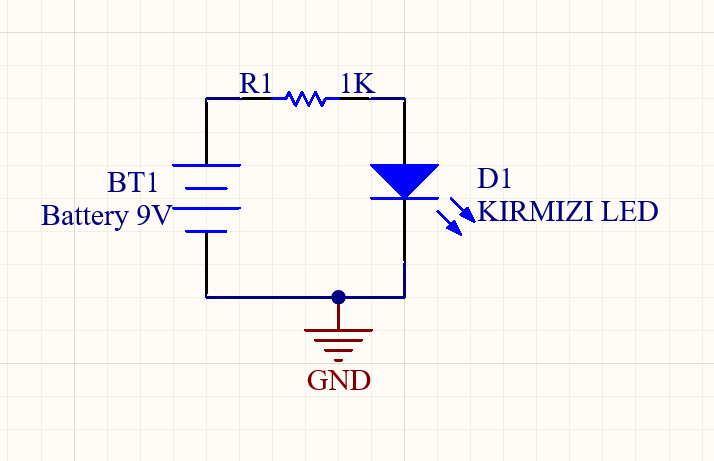

Elektrik-Elektronik mühendisliği projelerimi paylaştığım, teknik yazılar kaleme aldığım ve kişisel gezi notlarımı tuttuğum dijital alanıma hoş geldiniz.

Elektroniğin bebek adımı olan ilk led devresi tasarımı.
Sensör verilerini işleyip Wi-Fi üzerinden sunucuya aktaran, endüstriyel standartlara uygun donanım ve yazılım mimarisi.
Pleksi üzeri lazer kesim neon tabelalar için tasarladığım, animasyon modları içeren özel aydınlatma sürücü kartı.
Şubat ayında başlattığım yoğun proje kampının bir parçası olarak tasarladığım yüksek akım kapasiteli H-Köprüsü devresi.
İç katmanlarda GND ve VCC düzlemleri kullanılarak sinyal bütünlüğünün sağlandığı ileri seviye PCB çizim denemesi.
Mobil arayüz üzerinden evdeki 220V cihazları güvenli bir şekilde kontrol etmeyi sağlayan optokuplör izolasyonlu devre.
Sıcaklık, nem ve hava kalitesi sensörlerinin tek bir I2C hattı üzerinden okunup işlendiği veri toplama modülü.
Yüksek frekanslı hatlarda sinyal bütünlüğünü korumak ve hatlar arası etkileşimi en aza indirmek için dikkat edilmesi gereken yönlendirme teknikleri.
Fiat Egea aracımdaki tecrübelerimden yola çıkarak EGR valfi tıkanması, performans kaybı ve kurum temizleme süreçlerinin teknik analizi.
Az ama öz parçalarla şık kombinler yaratmak. Renk paletleri, doğru kalıp seçimi ve günlük hayatta deri ceket kullanımı üzerine notlar.
Modern dizel araçların en büyük kronik problemi olan AdBlue enjektör tıkanmaları ve egzoz sistemindeki basınç hatalarına mühendislik bakışı.
Red Dead Redemption 2'nin hikaye anlatım derinliği ile Assassin's Creed Valhalla'nın karakter gelişim mekaniklerinin karşılaştırmalı analizi.
Armani Stronger With You serisi, Bentley'nin odunsu notaları ve klon parfümlerin performans/fiyat oranları üzerine kişisel deneyimlerim.
Bilinçaltının ürettiği imgeleri, fincan telvelerindeki şekilleri ve günlük hayattaki sembolleri analitik bir bakış açısıyla okuma denemeleri.
Nisan sonunda arkadaşlarla organize ettiğimiz, Akdeniz'in en virajlı ama en güzel manzaralı yollarından geçerek yaptığımız Kalkan gezisi detayları.
Üniversite kampüsünden çıkıp Kayseri'nin zirvesine doğru yaptığımız kısa bir kış sonu yürüyüşü ve bölgenin atmosferi.
Tarihi sokaklar, yerel lezzet durakları ve doğduğum şehirde günlük hayat koşturmacasından uzaklaşmak için keşfettiğim sakin köşeler.